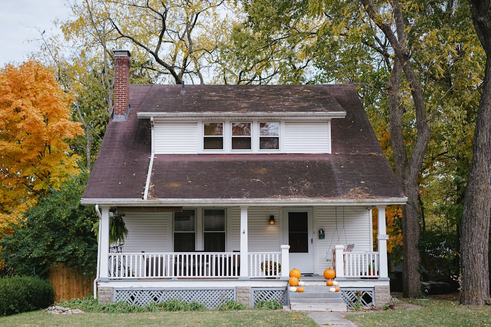

Architecture that respects both human needs and environmental
responsibility
At Meridian Architects, we believe that exceptional design emerges
from the intersection of human experience and environmental
stewardship. Our practice specializes in creating buildings that not
only serve their intended purpose but also contribute positively to
their communities and ecosystems.
Through careful material selection, passive design strategies, and
innovative construction techniques, we develop architectural
solutions that minimize environmental impact while maximizing
spatial quality and user comfort.
Hillside Residence
This 3,200 sq ft single-family home integrates into the natural
topography through a series of terraced volumes. Cross-laminated
timber construction and passive solar orientation reduce energy
consumption by 60% compared to conventional homes.
Floor-to-ceiling glazing frames views of the adjacent oak grove
while maintaining privacy through strategic landscaping.
Marin County, CA — 2024
Innovation Hub
A 45,000 sq ft mixed-use development housing tech startups and
research facilities. The building features a double-height atrium
with natural ventilation, reducing mechanical cooling loads.
Reclaimed brick facade and green roof systems create habitat
corridors while managing stormwater runoff. Flexible floor plates
accommodate changing tenant needs.
Austin, TX — 2023
Community Library
This 12,000 sq ft public library serves as a neighborhood anchor
through its accessible design and community programming spaces.
Clerestory windows provide abundant natural light while minimizing
glare on reading surfaces. Local stone and mass timber
construction celebrate regional materials and craftsmanship
traditions.
Boulder, CO — 2023
Affordable Housing Development
A 48-unit residential complex providing dignified,
energy-efficient housing for working families. Prefabricated
construction methods and shared community spaces reduce costs
while fostering social connections. Photovoltaic arrays and
greywater systems achieve net-zero energy performance across the
development.
Portland, OR — 2022
Wellness Center
This 8,500 sq ft healthcare facility prioritizes biophilic design
principles to support patient healing and staff wellbeing.
Interior gardens, natural materials, and optimized daylighting
create calming environments. High-performance building envelope
and radiant heating systems ensure year-round comfort with minimal
energy use.
Seattle, WA — 2024

Urban Infill Housing
A collection of four townhomes maximizes density on a narrow urban
lot while maintaining neighborhood character. Shared courtyards
and rooftop gardens create private outdoor space within the urban
context. Modular construction and standardized details reduce
construction waste and delivery time.
San Francisco, CA — 2023